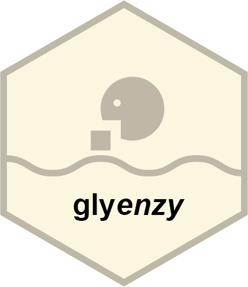

Changelog
glyenzy 0.4.0
Breaking changes
- Strengthen validation of the
rejectsfield in enzyme rules: each reject must contain the acceptor motif. - Rework
rejectshandling inapply_enzyme()(and callers) to evaluate rejects per match rather than per glycan, improving accuracy for glycans with multiple acceptor matches. - Update built-in rules for MAN2A1, MAN2A2, MGAT3, MGAT4A, and MGAT4B to align with the new reject semantics.
- Remove the now-redundant
rejects_alignmentfield fromenzyme_ruleobjects;acceptor_alignmentis reused for reject checks.
New features
- Add
create_enzyme(), enabling programmatic construction of custom enzymes.
Minor improvements and fixes
-
spawn_glycans()now shows live glycan counts in the progress bar.
glyenzy 0.3.2
Minor improvements and fixes
- Fix errors in the rules of some enzymes, including B3GALT1, B3GALT2, and FUT8.
- Fix a bug in progress bar of
spawn_glycans().
glyenzy 0.3.0
New features
- Add many new enzymes, including FUT5, FUT6, ST3GAL5, ST6GALNAC5, ST6GALNAC6, ST8SIA1, ST8SIA5, ST8SIA6, B3GAT3, CHPF, CHPF2, CHSY1, CHSY3, EXT1, EXT2, HAS1, HAS2, HAS3, LARGE1, LARGE2, B3GLCT, A4GALT, ABO, B3GALT6, B4GALT6, GXYLT1, GXYLT2, LARGE1, LARGE2, XXYLT1, B3GALNT1, B4GALNT1, B4GALNT3, B4GALNT4, CSGALNACT1, CSGALNACT2, B3GNT5, B3GNT7, POMGNT1, POMGNT2, LFNG, MFNG, RFNG, EXLT1, EXLT2, EXLT3
- Update the rules of some existing enzymes, including FUT1, FUT2, FUT3, FUT4, FUT7, FUT8, FUT9, ST3GAL2, ST3GAL3, ST3GAL4, ST6GALNAC1, ST6GALNAC3, ST8SIA2, ST8SIA3, ST8SIA4, B3GALT4, B3GALT5, B4GALT1, B4GALT4, B4GALT5, B4GALNT2, MGAT5B, B3GNT8, GCNT2, GCNT3, A4GNT, ST3GAL1
-
rebuild_biosynthesis()now supports many new glycan types, including O-Man, O-GlcNAc, O-Fuc, and O-Glc.
Minor improvements and fixes
-
find_synthesis_path()andrebuild_biosynthesis()has been optimized for large glycans. - All functions explicitly check if the input glycans are concrete (e.g. “Glc”, “GalNAc”) and raise errors with helpful messages if not.
glyenzy 0.2.0
Breaking changes
- Remove
returnparameter fromfind_synthesis_path()andrebuild_biosynthesis(). Now they always return all possible paths.
New features
-
rebuild_biosynthesis()now supports multiple target glycans. The resulting graph contains all given target glycans and intermediate glycans.
Minor improvements and fixes
- Update documentations of
find_synthesis_path()andrebuild_biosynthesis()to include some important notes. - Fix bugs in
find_synthesis_path()andrebuild_biosynthesis()that glycan structure strings other than IUPAC-condensed format cannot be parsed. - Add checks in all functions to ensure that the input glycans have intact linkages and no substituents, and raise errors with helpful messages if not.
- Refactor
apply_enzyme()to stop using internalglymotiffunctions to avoid fragile dependency.